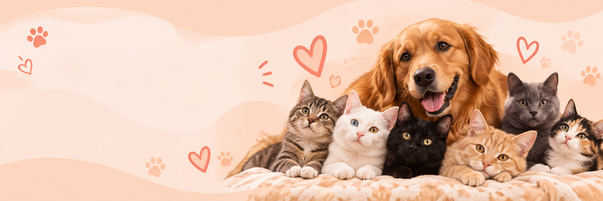

🥣 Alimentación
Nos ayuda a proporcionar alimento diario a nuestros perritos y gatitos.

Si no puedes adoptar un compañerito por falta de tiempo, puedes apoyarnos con sus gastos.
Cada aporte, sin importar su tamaño, nos ayuda a brindarles alimento, cuidados y la atención que necesitan mientras esperan encontrar una familia.
Cada granito de arena cuenta.Sé parte de su historia.🐾
Nos ayuda a proporcionar alimento diario a nuestros perritos y gatitos.
Contribuye con chequeos, medicamentos, vacunas y tratamientos.
Permite mantener a nuestros peluditos limpios, saludables y cómodos.
Ayuda con el mantenimiento de los espacios donde nuestros animales esperan un hogar.
Selecciona la opción que prefieras. Tu ayuda puede convertirse en comida, cuidados y nuevas oportunidades.
Puedes realizar tu donación mediante cualquiera de estos medios:
970 644 334
970 644 334
Banco: BCP
Cuenta: 00219410114853103198
Tal vez para ti sea una pequeña ayuda, pero para uno de nuestros peluditos puede significar alimento, atención, cuidado y una oportunidad más para esperar por su hogar.
Gracias por ayudarnos a darles la vida y el amor que merecen. ❤️